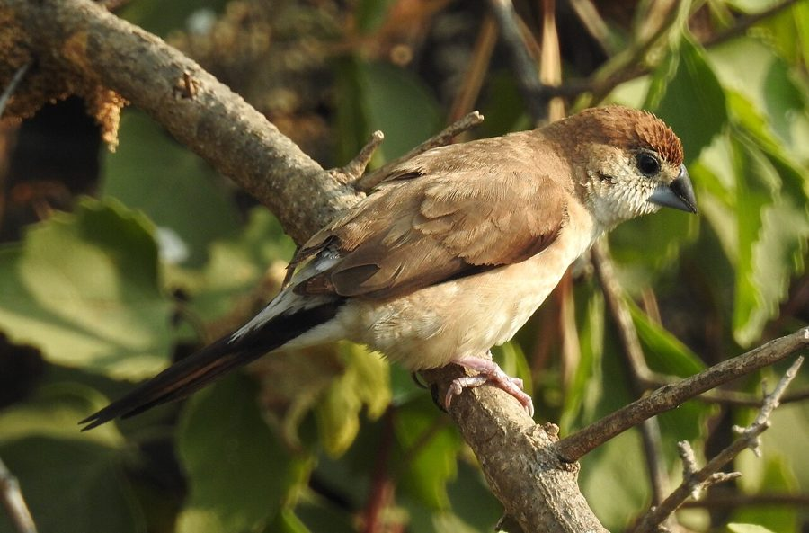

सफ़ेद गले की मुनियाIndian Silverbill
Euodice malabarica · Estrildidae · BRD-0092

- Scientific name वैज्ञानिक नाम
- Euodice malabarica (Linnaeus, 1758)
- Family कुल
- Estrildidae
- Hindi हिंदी
- सफ़ेद गले की मुनिया / चाँदी मुनिया
- Local names स्थानीय नाम
- chandi munia, chandi muniya, safed munia, munia, pidda
- Status here यहाँ की स्थिति
- native
- Movement आवागमन
- Resident, here all year
- IUCN IUCN
- LC
- Review समीक्षा
- audited and independently read
When to look कब देखें
Present all year. साल भर मौजूद।
Tell it apart from इनसे अलग पहचानें
चाँदी मुनिया / Indian Silverbill
Euodice malabarica (Linnaeus, 1758) — Estrildidae
चाँदी मुनिया — एक छोटी, हल्की-फुल्की चिड़िया जो समूह में रहती है और कभी अकेली नहीं दिखती। इसका पूरा शरीर भूरा है पर पीठ पर सफेद धब्बे हैं। चोंच चाँदी जैसी सफेद है इसलिए इसका नाम "चाँदी मुनिया" है। दाने खाती है, सीटियाँ बजाती है।
Quick Identification त्वरित पहचान
| Feature | Description |
|---|---|
| Size | Tiny finch (11–13 cm total length); very small and dainty |
| Plumage overall | Soft sandy-brown to buff coloration throughout |
| **Head | Brown with paler face |
| Back | Brown with pale spots and streaks |
| Underparts | Pale buffy-white; paler than back |
| Rump | White — prominent and distinctive |
| Bill | Silver-white or pale — diagnostic (gives "silverbill" name) |
| Tail | Brown; notched |
| Legs and feet | Red or reddish |
Field tip: A tiny brown finch (smallest eastern UP finch) with a distinctive white or silver bill and white rump. Always seen in flocks. Look for the pale silvery bill to separate from similar munias.
Morphology आकारिकी
Biometrics (nominate subspecies malabarica, northern India — the form in eastern UP):
| Measurement | Range |
|---|---|
| Total length | 110–130 mm |
| Wing (flattened chord) | 60–70 mm |
| Tail | 40–50 mm |
| Tarsus | 12–13 mm |
| Bill (culmen from base) | 11–13 mm |
| Weight | 9–13 g |
Plumage: Head and upperparts soft sandy-brown. Underparts paler, buffy-white on belly. Rump white and prominent — visible even in flight. Back with fine streaking. Wings brown; flight feathers slightly darker. Tail brown, notched at tip.
Face: Paler than crown; postocular area whitish.
Bill: Silver-white to pale horn-colour — the most distinctive feature. Short and pointed, adapted for picking small seeds.
Legs and feet: Red or reddish (sometimes appearing reddish-orange).
Sexes: Similar; no obvious sexual dimorphism.
Juveniles: Duller; paler overall; bill less white.
Vocalisations
Indian Silverbill is a quiet to moderately vocal bird, especially in flocks where continuous soft contact calls maintain group cohesion.
- Contact call: Soft, rapid "chi-chi-chi" or "sweet-sweet-sweet", maintained constantly as flocks forage.
- Song: Quiet, rarely heard; a soft, twittering warble from perched birds.
- Alarm call: Slightly sharper "chit-chit-chit" when startled but calls are never loud or harsh.
Behaviour & Ecology व्यवहार और पारिस्थितिकी
Highly gregarious: Indian Silverbills are almost never seen alone. Flocks vary from 10–50+ birds, moving as coordinated units. Entire flock feeds, roosts and moves together.
Ground and aerial feeder: Feeds on the ground in open spaces, picking small seeds from grass and weeds, or in flight, gleaning seeds from standing grass heads. The feeding is dainty and precise — picking individual seeds.
Nomadic: While resident year-round, local populations move in response to grass seed availability. Flocks may appear and disappear based on seasonal fruiting.
Social structure: Pairs within flocks remain paired year-round and breed together, but pairs stay loosely associated with the flock rather than defending territories.
Life Cycle / Phenology जीवन चक्र
- January–February: Flocks in drier areas; seed-feeding
- March–May: Breeding begins; pairs break off to nest but remain loosely in flock groups
- April–June: Eggs (4–5) laid in woven, domed nest; incubation shared
- May–July: Chicks fledge and quickly join parent in feeding
- August–October: Post-breeding; flocks coalesce as young become independent
- November–December: Peak flock sizes; moving to follow seed availability
Host Plants or Prey आहार
Exclusive granivore:
- Seeds of wild grasses and weeds (primary diet)
- Fallen grain (after harvest): paddy, millet, wheat
- Small seeds of herbs and herbaceous plants
- No insects taken (unlike many finches)
Predators / Natural Enemies शत्रु
- Shikra (Accipiter badius) — primary predator; hunts flocks in open areas
- Common Kestrel (Falco tinnunculus) — winter visitor; hunts small birds
- Feral cats — wait near favoured feeding sites
- Snakes — rarely, at roost sites
Agricultural / Human Relevance कृषि प्रासंगिकता
Grain feeding: Indian Silverbills consume significant quantities of fallen grain in harvested fields and grain storage areas. In areas with large grain stores or unharvested grain, flocks can cause minor crop damage. However, the birds are not aggressive grain-eaters and primarily feed on weed seeds.
Weed seed control: The consumption of vast quantities of grass and weed seeds provides a minor ecosystem service, controlling seed production of troublesome weeds.
Cage bird trade: Historically and today, this species is popular as a cage bird in South Asia due to its small size and quiet nature. Trapping for the pet trade has reduced wild populations in some areas (now protected but still trapped illegally).
Protected status: Schedule IV of Wildlife (Protection) Act, 1972. Bird trapping is illegal.
Expected Locally स्थानीय रूप से अपेक्षित
Not a field record. Written from published accounts for eastern Uttar Pradesh. No confirmed local sighting yet — if you have seen it, that is what the atlas needs.
अभी तक स्थानीय पुष्टि नहीं। यह विवरण प्रकाशित स्रोतों से है, किसी अवलोकन से नहीं।
Indian Silverbill is expected year-round in Basti and Ayodhya districts in open, scrubby areas, grasslands, and around grain storage areas. Most visible after harvest season when grain is available on fields. Look for small flocks moving together with characteristic coordinated flight. Listen for the soft, continuous "chi-chi-chi" contact calls of foraging flocks.
Distribution वितरण
Global range: Indian subcontinent and introduced to parts of Africa — widespread across the dry plains of India, Pakistan, Afghanistan and Bangladesh.
In India: Common resident across northern and central India in dry and semi-arid regions; rarer in wetter regions.
In Uttar Pradesh: Common resident in drier districts; less common in wetter areas of the state.
In Basti district / eastern UP: Expected in suitable dry areas; abundance varies seasonally with grass seed availability.
Research Questions शोध प्रश्न
- How large are flocks of Indian Silverbills in your village? / एक साथ कितनी चाँदी मुनियाँ रहती हैं? — Count flocks in open areas; record sizes; note seasonal variation.
- Where do they find the most food? / सबसे ज़्यादा खाना कहाँ मिलता है? — Watch flocks and note preferred feeding locations (fields, grain stores, roadsides).
- Do flocks stay in one area or move? / क्या एक जगह रहते हैं या घूमते हैं? — Mark a flock and follow it week to week to see if it stays or moves.
- How many seeds can one bird eat in a day? / एक दिन में कितने दाने खाती है? — No equipment needed — simple observation of feeding duration.
- Do they damage stored grain? / अनाज के भंडार को नुकसान पहुँचाती हैं? — Monitor grain stores; count feeding flocks; measure grain loss if any.
Similar Species मिलती-जुलती प्रजातियाँ
| Species | How to tell apart | हिंदी | |
|---|---|---|---|
| Black-headed Munia (Lonchura atricapilla) — if found | Black head; dark underparts; black bill (not silver); much darker overall | काली सिर मुनिया — सब काला | |
| [[red_avadavat\ | Red Munia]] (Estrilda astrild) — if rare visitor | Red rump; red bill; red eye-stripe; underparts streaked | लाल मुनिया — लाल पूँछ |
Field rule: Tiny brown finch with distinctive silver-white bill and white rump, always in flocks, soft "chi-chi-chi" calls = Indian Silverbill. The pale bill is diagnostic.
Taxonomy & Classification वर्गीकरण
Original description. Euodice malabarica was described by Linnaeus in 1758 as Fringilla malabarica, based on specimens from the Malabar Coast. The genus Euodice was erected later.
Subspecies. Several subspecies recognised; malabarica is the nominate form occurring across most of India including UP.
Family and order placement. Order Passeriformes; family Estrildidae (whydahs, indigobirds, munias, Gouldian finches, firefinches, and Bengalese finches). Estrildidae are primarily African, with some Asian representatives.
Phylogenetic notes. Molecular studies place Euodice within a clade of Old World finches, closer to African silverbills than to Asian munias despite superficial similarity.
IUCN status rationale. Assessed as Least Concern. The species is widespread and common despite historical trapping for the pet trade; populations stable.
Photo Gallery फोटो गैलरी
Note: Add field photos tomedia/species/indian_silverbill/
फोटो निर्देश: पास से (चाँदी जैसी सफेद चोंच दिखाते हुए), समूह में दाने खाते हुए, उड़ते समय (सफेद रुँप), और शाख पर बैठे।
Photos needed आवश्यक फोटो
- [ ] Close-up showing silver-white bill (सफेद चोंच)
- [ ] Flock feeding on seeds (समूह में खाते हुए)
- [ ] In flight showing white rump (उड़ते समय सफेद रुँप)
- [ ] Perched on grass seed head (घास के सिर पर)
- [ ] Group on branch (शाख पर समूह)
References संदर्भ
- Linnaeus, C. (1758). Systema Naturae per regna tria naturae, 10th ed. Holmiae, p. 183. [original description]
- Ali, S. & Ripley, S.D. (1987). Handbook of the Birds of India and Pakistan. Vol. 7. Oxford University Press, New Delhi.
- Grimmett, R., Inskipp, C. & Inskipp, T. (2011). Birds of the Indian Subcontinent. 2nd ed. Christopher Helm, London.
- Rasmussen, P.C. & Anderton, J.C. (2005). Birds of South Asia: The Ripley Guide. Smithsonian Institution, Washington.
- Goodwin, D. (1982). Estrildid Finches of the World. Cornell University Press, Ithaca.
- BirdLife International (2024). Euodice malabarica. IUCN Red List of Threatened Species. Ver. 2024.
- GBIF Occurrence Data — Euodice malabarica, Uttar Pradesh (2010–2025).
Source file: species/fauna/birds/indian_silverbill.md